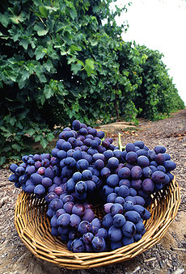
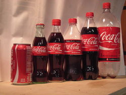
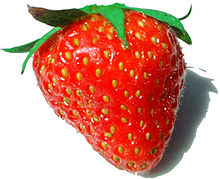
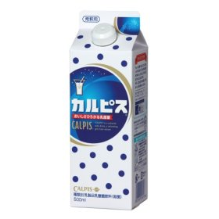

子要素の内容によって、親を抽出
最初と最後をフィルタリング
奇数と偶数をフィルタリング
奇数
偶数
- HTML／CSS
- XML2
- JavaScript2
- PHP2
インデックスで指定
n番目をフィルター
n番目より前/後
指定の文字列で絞り込み
内容を持つ/持たないで絞り込み
| 資料/プレ講義説明書 |
文字コードについて |
| 休憩 |
|
| 変数・ifの基本的な条件分岐 |
contact/if.php |
指定した要素に合致する子要素を含んだ要素
イベント情報はこちらから入手できます。
詳しくはプログラミング学習を参照ください。
子要素を抽出
先頭、または末尾の子要素を取り出す
- HTML／CSS
- XML2
- JavaScript2
- PHP2
childなしと比較
- HTML／CSS
- XML2
- JavaScript2
- PHP2
n個ごとに子要素を取り出す
３個おきに抽出する例
- スワイプス
- ウィンドミル
- シフト
- ダブルシフト
- フリップ
- ドンキー
- チェア
- エアチェア
- フリーズ
３で割ったときに１余る番目を指定する例
- スワイプス
- ウィンドミル
- シフト
- ダブルシフト
- フリップ
- ドンキー
- チェア
- エアチェア
- フリーズ
偶数のみ指定する例
- スワイプス
- ウィンドミル
- シフト
- ダブルシフト
- フリップ
- ドンキー
- チェア
- エアチェア
- フリーズ
固定値(4)で指定する例
- スワイプス
- ウィンドミル
- シフト
- ダブルシフト
- フリップ
- ドンキー
- チェア
- エアチェア
- フリーズ
唯一の子要素であるものだけを取り出す
<p>要素の配下に<img>要素が一つだけある場合に、その画像の枠を付与する



本体テキストは子要素として見なされないため、<img>タグしか存在しない扱いになる

カルピスの写真
属性値の値によって絞り込む
特定の属性を持つ要素だけを取り出す
属性がある値に等しい/等しくない要素だけを取り出す
target属性が"_blank"である<a>要素の背景を黄色にする
属性の値が部分的に一致する要素だけを取り出す
複数の附属生フィルターを組み合わせる
href属性が「http://〜」で始まり、かつ、target属性が含まれる<a>要素の背景を黄色にする。
その他のフィルター
見出しだけ取り出す
全てのheaderに背景色をつける(コメントアウトを外してください)
セレクターに合致しない要素を取り出す
状態でアクセスすべき要素を絞り込む
以下は、チェック状態にあるラジオボタンについて、そのラベルの背景色を黄緑色にする例です。
(ページを開いた時点での状態を確認していますので、チェックを変えても色は変更されません。)